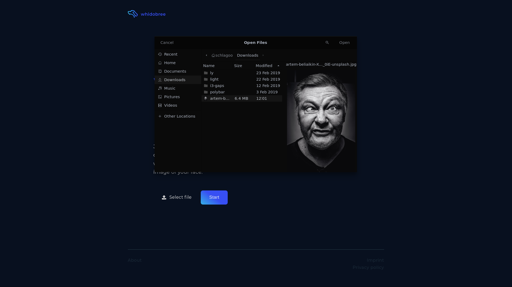

ML Web App: Which dog breed are you?
At the beginning of 2020 I started another project in my freetime. I wanted to create a fullstack solution using some sort of machine learning algorithm. My final idea intherited a web interface an user should be able to upload selfies with which my algotihm predicts a dog breed most similar to the users facial features. Short: A user should be able to find out which dog breed they are most similar to.
Therefore I needed an architecture where a user can upload a picture through a web interace, I can predict uploaded pictures in a back-end solution and visualize results through a web interface back to the user.
Current status: Offline
Used up Amazon student credit for Elastic-Beanstalk service...
# Front-end
Since I gained much experience with Django in my time at BMW, I wanted to build
my web interface with this framework in Python.
I wanted to build a up to date, simple and responsive website a user should intuitively be
able to use.
As you can see above, I designed this landing page quite minimalistic. A user should instantly see what this website is about and what he needs to do. To upload an picture I created a custom file form to read images and write them to the back-end storage for thurder processing.
After choosing a file, the user just needs to press start to initialize processing handled by back-end functionality.

After generating results, the user can see which dog breed he's most likely to by getting the breeds name, prediction accuracy of this breed as well as an example picture. If an user is not satisfied with its current results he can try to upload annother picture.
# Back-end
To predict dog breeds by images I built a Convolutional neural network trained on an own
generated dataset inheriting around 12.000 Bing-images of 65 different dog breeds.
Due to this high number of dog breeds and some random pictures in Bings search history
general performance is quite bad like expected (currently around 40% of test accuracy). I'm
using Tensorflow 2 (Keras) as machine learning library in Python.
I'm currently still working on the models architecture on Colab to try some new things I
didn't do before.
General back-end functionality to predict the current image is quite simple. Back-end functionality will be triggered if an valid file (image) was uploaded through the file form.
# Resize image
processed_image = cv2.resize(image, (150, 150))
# Reshape image (needed for model input shape)
processed_image = np.array(processed_image).reshape(-1, 150, 150, 3)
# Convert data to float32
processed_image = np.array(processed_image, dtype=np.float32)
# Normalize data
processed_image /= 255
# Load model
model = load_model("media/model.h5")
# Predict current image
prediction = model.predict(processed_image)
# Get class and probability
index = np.argmax(prediction[0])
probability = round(float(prediction[0][index]), 2) * 100
# Get breed name
breed = CATEGORIES[index]
After generating prediction, probability and breed name the result page will be rendered and context filled with information.
context = {
"probability": probability,
"breed": breed,
...
"image_path_dog": image_path_dog,
}
return HttpResponse(template_result.render(context, request))
I published my solution through Amazons Elastic-Beanstalk service using my student credit and free tier virtual machines which had just enough performance to process predictions.
Type
Private project
Tools
Python, Django, Tensorflow 2, Numpy, OpenCV, Pillow
Partners
-
Date
2020-03-24
Source